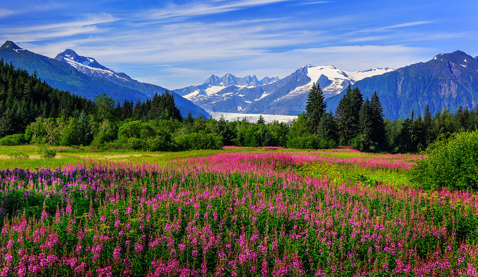

I would love to go and travel. This is one of the many things I would love to do in the near future when I am still young.
I would like to go to different states, as well as different contries to see the world in a different perspective.
In fact, I am going to San Diego in April for the Society of Hispanic Professional Engineers Regional Leadership Development
Conference. I am planning on attending this event at see what San Diego has to offer while pursing educational oppertunities.
Overall I want to visit Canada, because I have seen a lot of movies filmed in Canada such as Scott Pilgrim vs. The World.
Playtest
My second interest involves video games. Not only does it involve video games, but it involves playtesting upcoming video
games. I enjoy playtesting, because I have the chance to play a video game before it's a finished product, so that means I am
given the opprtunity to play the game in it's current built stage and give the developers feedback on the level, design,
sound, artwork, story, or mechanics. I have playtested multiple times and at different locations such as Irvine and Santa Monica.
I have done 5 playtest in the past and each time they have you sign an NDA (Non-Disclosure Agreenment), so that playtesters such
as myself and others don't tell the public about the video game or what it contains. After playing for multiple hours (and some breaks in between), they have you fill out a survey regarding the content you played within the span of that time. In fact, they
may even feed you sometimes, depending how long the playtest is. For example, I playtested for 8 hours on two days (a weekend)
and around 1 pm they would take us to the break room and they would have italian food ready for us!
Scenery
My third interest involves watching sceneries. The reason why I enjoy looking at sceneries is because I like to enjoy the little
things in life and what the world as to offer, in terms of the landscape and the natural beauty of our planet. The beauty of
sceneries gives me this feelings of happiness of being alive. It makes me appreciate the world much more, considering all the
pollution and damage we do to it. That's why I want to travel in the near future, so that I could enjoy seeing countless
sceneries in my lifetime. One of the places I would love to visit is Alaska, because there is a lot of green areas and their
habit of living is unique to other states.
Cyber Security
Originally I didn't know what I wanted to do with my major, simply because of the fact that there is a lot that we can do with
Computer Science and there is a huge demand for people with same careeer as I. At first I wanted to do something involving video
games, but then after realizing that there are much greater oppertunities out their I realized I wanted to do something else. It
wasn't until I began getting exposed to media regarding hacking that I became fascinated with the idea and wanted to learn more
about it. One show that I watched in the past got me really interested in cyber security. It wasn't until that moment that I decided
that I wanted to follow this path and pursue this job. Mr Robot was the show that got me really into learning cyber security, in fact
after being exposed to the show, I began doing my own research about cyber security and it's huge demands for workers in this field.
 My third interest involves watching sceneries. The reason why I enjoy looking at sceneries is because I like to enjoy the little
things in life and what the world as to offer, in terms of the landscape and the natural beauty of our planet. The beauty of
sceneries gives me this feelings of happiness of being alive. It makes me appreciate the world much more, considering all the
pollution and damage we do to it. That's why I want to travel in the near future, so that I could enjoy seeing countless
sceneries in my lifetime. One of the places I would love to visit is Alaska, because there is a lot of green areas and their
habit of living is unique to other states.
My third interest involves watching sceneries. The reason why I enjoy looking at sceneries is because I like to enjoy the little
things in life and what the world as to offer, in terms of the landscape and the natural beauty of our planet. The beauty of
sceneries gives me this feelings of happiness of being alive. It makes me appreciate the world much more, considering all the
pollution and damage we do to it. That's why I want to travel in the near future, so that I could enjoy seeing countless
sceneries in my lifetime. One of the places I would love to visit is Alaska, because there is a lot of green areas and their
habit of living is unique to other states.